← Index · ← Previous · Next →
Authors: Lillian Thiel, Boqiang Shen, Jasper R. Venneberg, Melissa A. Guidry, Nic Arnaud, Adam Slater, Lucas Wang, Xuefeng Li, Josh Castro, Yiming Pang, Max Meunier, Sahil D. Patel, Yang Shen, Theodore Morin, Igor Kudelin, Bowen Song, Kaustubh Asawa, John E. Bowers, Kerry Vahala, Nergis Mavalvala, Xinghui Yin, Steven Bowers, Minh A. Tran, Tin Komljenovic, Galan Moody
Type: experiment · Category: quantum information and computing · PDF: https://arxiv.org/pdf/2605.17738v1
Analysis basis: full PDF text, analyzed in chunks
Topic relevance: 🔥 QC/QI experiment 4/5 · 🔥 quantum optics experiment 4/5 · entanglement & information structure 1/5 · interference shaping light 1/5 · quantum measurements 1/5
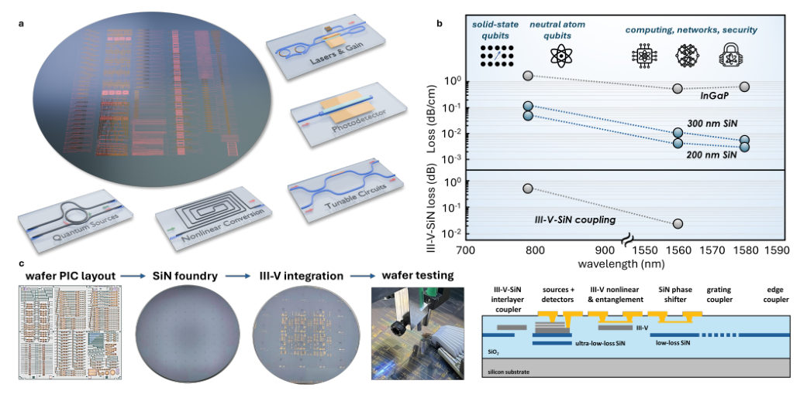
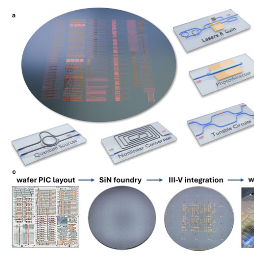
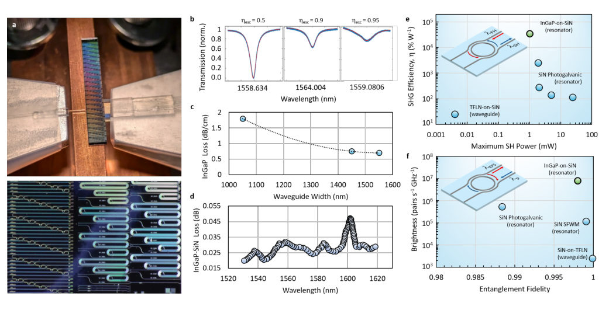
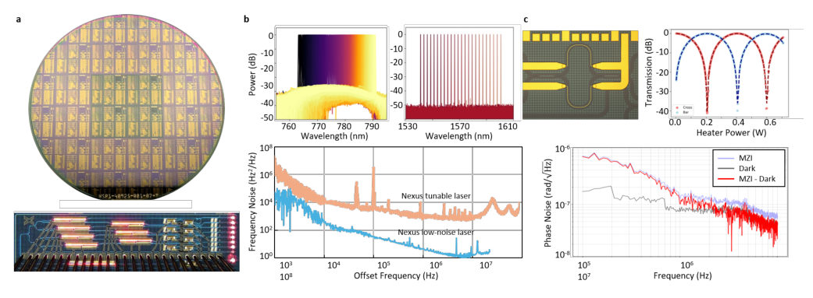
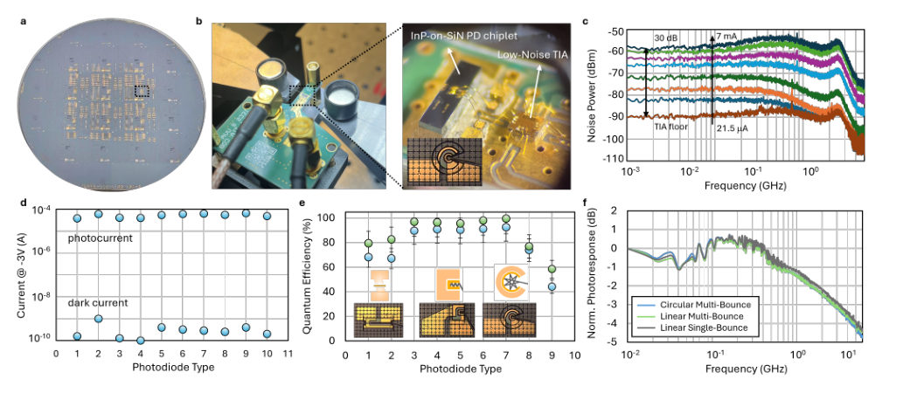
Summary. The researchers have developed a new way to manufacture quantum photonic chips by bonding III-V materials directly onto silicon nitride wafers. This platform allows for the integration of lasers, nonlinear light sources, and high-efficiency detectors on a single, large-scale chip. This advancement is a major step toward building complex, large-scale quantum computers and communication networks.
Why it may be interesting. This work is highly relevant to quantum optics and quantum information as it provides a scalable hardware architecture for generating and detecting complex quantum states like squeezed light and entangled photons with extremely high fidelity and low loss.
Main problem. The difficulty of creating scalable, wafer-scale quantum photonic circuits that simultaneously provide ultra-low-loss passive routing, high optical gain, and strong nonlinearities without the losses or scalability issues of previous integration methods.
Main result. The demonstration of a wafer-scale III-V-on-SiN platform that integrates high-efficiency nonlinear elements, lasers, and detectors, achieving 15x brighter entanglement sources and near-unity quantum efficiency in photodetectors.
Method. Wafer-scale manufacturing using direct bonding of III-V epitaxial stacks onto foundry-fabricated SiN circuits, utilizing adiabatic inverse tapers for interlayer coupling and self-injection locking for laser noise reduction.
Model / system. A heterogeneous photonic platform consisting of ultra-low-loss Silicon Nitride (SiN) waveguides integrated with III-V materials (InGaP and InP) for gain, nonlinearity, and detection.
Key observables. SiN waveguide loss, InGaP waveguide loss, interlayer coupling loss, SHG efficiency, entangled-photon brightness, two-photon entanglement fidelity, laser linewidth, and photodetector quantum efficiency.
Important parameters / regimes. SiN loss < 1 dB/m, InGaP SHG efficiency > 35,000 %/W, entanglement fidelity of 99.9%, photodetector quantum efficiency > 99%, and laser linewidth in the hertz-level regime.
Figures summary. Figure 4b shows the integrated homodyne detector setup and a model for squeezing degradation; Figure 4c displays photodetector bandwidth and noise; Figure 5a illustrates the vision for a fully integrated system.
Paper structure. The paper introduces the challenge of scalable quantum photonics, describes the fabrication and architecture of the III-V-on-SiN platform, details the characterization of nonlinear sources and active components, analyzes noise and efficiency in the detection system, and concludes with a roadmap for large-scale integration.
Heterogeneous integration of gain and strongly nonlinear materials with ultra-low-loss silicon nitride (SiN) photonics offers a route to scalable quantum circuits, but concurrent wafer-scale manufacturability, low interlayer loss, and high performance have been challenging to realize. Here we demonstrate a wafer-scale III-V-on-SiN quantum photonic platform that directly integrates III-V layers to foundry-fabricated SiN circuits. The SiN layer provides 200-300 nm thick waveguides with $<1$ dB/m loss and a mature passive photonics ecosystem, while III-V materials provide large $χ^{\left(2\right)}$ and $χ^{\left(3\right)}$ nonlinearities for parametric gain, frequency conversion and quantum light generation. Adiabatic interlayer couplers yield $<25$ mdB loss to InGaP waveguides and resonators with intrinsic quality factors exceeding $10^6$, enabling $15\times$ brighter entanglement sources and efficient nonlinear conversion on SiN. Integrated components--including low-loss beam splitters, waveguide crossers, and tunable interferometers--are complemented by III-V lasers and InP photodetectors with amplifiers achieving up to $99^{+1}_{-12}\%$ quantum efficiency and $3$ GHz bandwidth. This architecture unites ultra-efficient sources, nonlinear elements and detectors on a wafer-scale, low-loss platform, establishing a path toward large-scale, low-noise quantum photonic systems.
Authors: Yihan Wang, Xiaofeng Jin, Yuchuan Ming, Jianxiang Miao, Xiao-Ming Lu, M. W. Mitchell, Jia Kong
Type: both · Category: other · PDF: https://arxiv.org/pdf/2605.17784v1
Analysis basis: full PDF text, analyzed in chunks
Topic relevance: 🔥 quantum measurements 4/5 · spintronics-quantum-optics interface 3/5 · methods for driven-dissipative 2/5 · quantum optics experiment 2/5
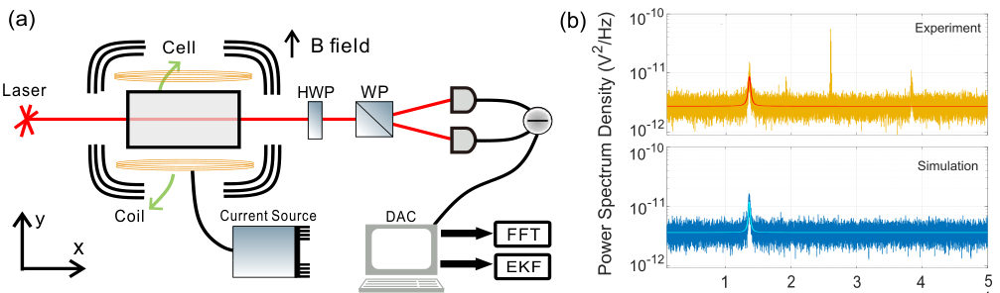
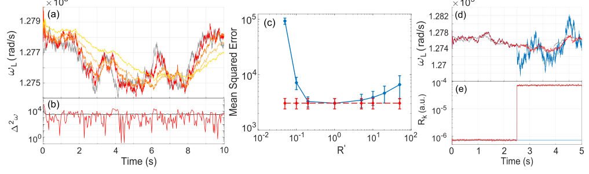
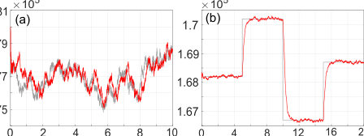
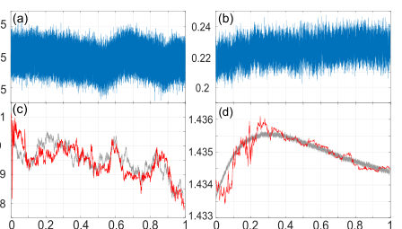
Summary. The paper presents an adaptive filtering framework designed to track dynamic magnetic fields in real-time using spin-noise spectroscopy. By dynamically estimating measurement noise, the method overcomes the limitations of traditional filters and can reconstruct weak signals even when the noise levels change abruptly. This allows for the detection of magnetic field variations that are otherwise hidden below the intrinsic sensitivity of standard spectroscopic methods.
Why it may be interesting. This work is highly relevant for researchers in quantum sensing and open quantum systems as it provides a robust way to perform real-time parameter estimation in the presence of non-stationary noise and unknown signal dynamics.
Main problem. Extracting weak, time-varying magnetic field signals from high-noise environments where the signal-to-noise ratio is extremely low and the noise statistics may be non-stationary.
Main result. The development of an Adaptive Extended Kalman Filter (AEKF) that successfully tracks dynamic magnetic fields, even with massive measurement noise mismatch and without prior knowledge of the signal waveform, outperforming conventional spin-noise spectroscopy.
Method. An Adaptive Extended Kalman Filter (AEKF) utilizing the Sage-Husa algorithm and innovation-based adaptive estimation (IAE) with a sliding window to dynamically update measurement noise covariance.
Model / system. An 87Rb atomic vapor cell in a magnetic shield using Faraday rotation for detection, where the spin dynamics are governed by the Bloch equations.
Key observables. Photocurrent (capturing polarization fluctuations via the Faraday effect) and Larmor precession frequency.
Important parameters / regimes. Larmor frequency, relaxation term, spin-noise fluctuation matrix, and measurement noise intensity.
Assumptions / limitations. The magnetic field is assumed to be a slowly time-varying variable, and measurement noise is assumed to be Gaussian-distributed.
Figures summary. Fig 1 shows the experimental setup and agreement between experimental and simulated spin noise spectra; Fig 2 demonstrates AEKF robustness to noise mismatch and sudden disturbances; Fig 3 shows tracking of various field models; Fig 4 presents experimental reconstruction of random-walk and earthquake-like magnetic signals.
Paper structure. The paper introduces the challenge of weak signal extraction, proposes the AEKF framework, validates the method through numerical simulations of various field dynamics, and concludes with experimental demonstration using Rb vapor cells.
The extraction of weak signals plays a crucial role in quantum precision measurement, where the estimation results are often limited by low signal-to-noise ratios. Here, we demonstrate a parameter-estimation framework based on the adaptive extended Kalman filter for dynamic magnetic-field estimation in quantum systems using spin-noise measurements -- a challenging regime characterized by weak signals. By modeling the magnetic field as an unknown parameter, the proposed approach alleviates model dependence in state estimation. Furthermore, by introducing an adaptive algorithm with real-time noise estimation, our method overcomes the measurement noise intensity constraints of conventional extended Kalman filtering and enhances its practical applicability. Numerical simulations covering three representative magnetic-field dynamics validate the capability of the proposed framework, while experimental results demonstrate successful tracking of a seismo-magnetic-like signal beyond the intrinsic sensitivity of conventional spin-noise spectroscopy.
Authors: Mohamed Hatifi, Brian Stout
Type: theory · Category: quantum information and computing · PDF: https://arxiv.org/pdf/2605.16886v1
Analysis basis: full PDF text, analyzed in chunks
Topic relevance: 🔥 quantum measurements 4/5 · interference shaping light 3/5 · correlated / nonlocal dissipation 2/5 · free-space correlated emission 2/5
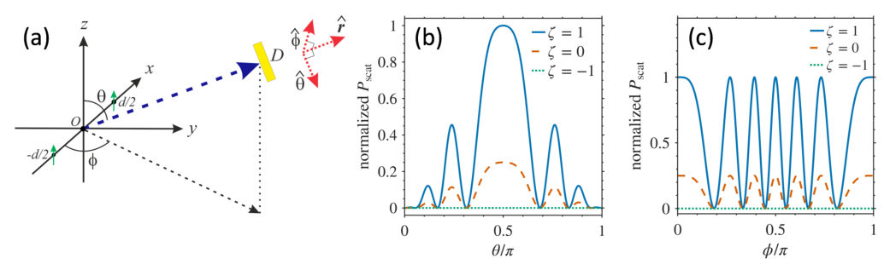
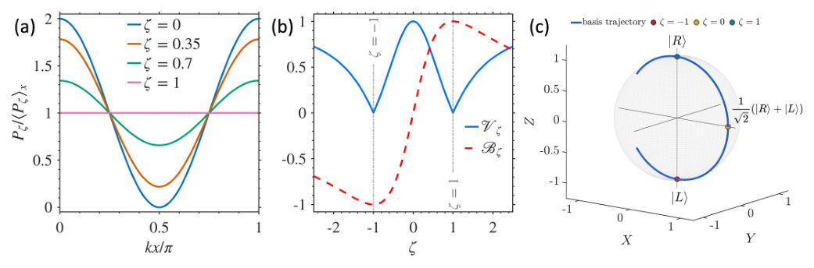
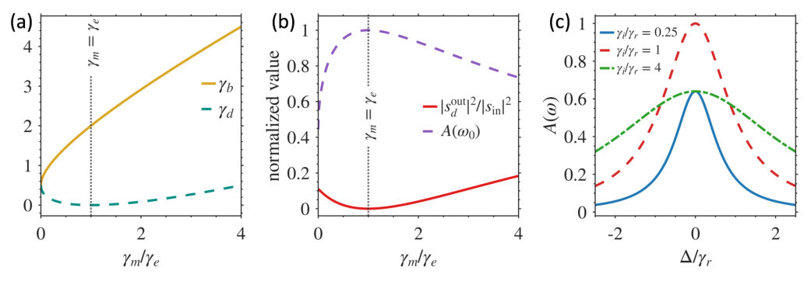
Summary. This paper proposes a generalized theory of photodetection that includes both electric and magnetic field sensitivities. It demonstrates that by engineering these responses, one can actively control the measurement basis of single photons and create detectors that absorb light without emitting detectable radiation. This offers a new design principle for advanced quantum sensors and metamaterial-based detectors.
Why it may be interesting. It provides a new way to think about detector engineering in quantum optics and circuit QED, showing that the detector architecture itself can be used as a tool to select measurement bases and control light-matter interaction channels.
Main problem. Standard quantum photodetection models (Glauber theory) rely solely on electric-field response, which fails to account for modern engineered detectors that are sensitive to both electric and magnetic fields.
Main result. The authors develop a generalized framework where the detector's electric and magnetic responses can be used to rotate the measurement basis and selectively suppress specific radiative output channels.
Method. The study uses an extension of Glauber's theory of optical coherence, POVM formalism, and input-output theory to analyze detection probability and absorption.
Model / system. The framework is applied to three scenarios: a far-field two-source dipole geometry, a two-mode single-photon Hilbert space, and a lossy resonant detector model with electric and magnetic coupling.
Key observables. Detection probability, first-order visibility, path distinguishability, and absorption fraction.
Important parameters / regimes. The complex parameter zeta (ratio of magnetic to electric response), radiative linewidths (gamma_e, gamma_m), and internal decay rate (gamma_i).
Assumptions / limitations. The model is presented as an effective description of engineered electromagnetic responses.
Figures summary. Figure 1 shows the two-dipole geometry and detection amplitude cancellation; Figure 2 illustrates detector-defined interference, visibility/path-bias relations, and Bloch sphere representation; Figure 3 shows radiative rates and the relationship between output channels and absorption.
Paper structure. The paper introduces a generalized detection operator, applies it to far-field interference, extends the analysis to single-photon basis rotation, investigates resonant absorption and channel selection, and concludes with a design principle for engineered detectors.
Photodetection converts optical quantum states into measurement events, but the usual electric-field response model becomes restrictive when the detector response is shaped by cavity, superconducting, or metamaterial engineering. We develop a generalized quantum photodetection framework in which electric and magnetic field amplitudes contribute coherently to the detection operator, and analyze it in a far-field two-source geometry, a two-mode single-photon setting, and a lossy resonant detector model. The far-field reference case exhibits complete detector-amplitude cancellation, absent in the electric-only Glauber response, while the single-photon model shows that the detector continuously rotates the effective measurement basis and controls the first-order visibility via an exact closed-form law. In the resonant realization, a monitored radiative output channel can be dark while the detector remains internally excited and absorptive, with unit absorption of the matched input mode at critical coupling. These results identify basis-selective readout and channel-selective absorption as experimentally relevant signatures of engineered electric-magnetic photodetection.
Authors: Guy Karni, Noam Cohen, Adi Pick
Type: theory · Category: quantum information and computing · PDF: https://arxiv.org/pdf/2605.16944v1
Analysis basis: full PDF text, analyzed in chunks
Topic relevance: 🔥 Rydberg arrays 4/5 · analog quantum simulation 3/5 · exotic spin models in light-matter 2/5 · non-equilibrium dynamics 2/5
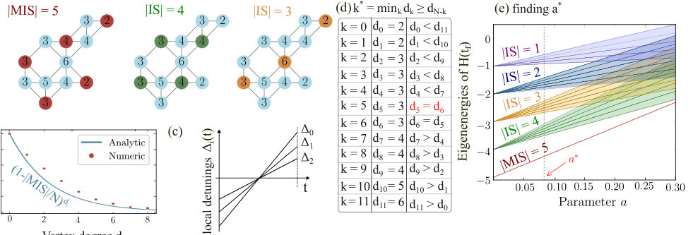
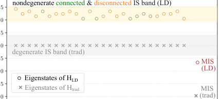
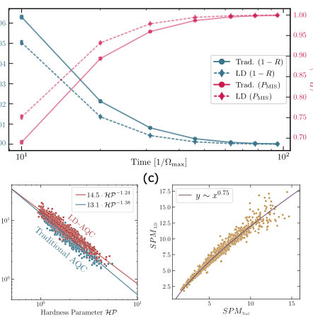
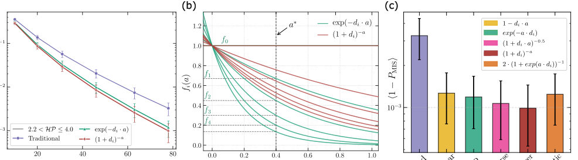
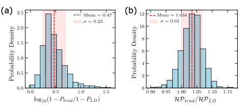
Summary. The paper introduces a new adiabatic quantum algorithm for the Maximum Independent Set problem using local, degree-dependent detuning in Rydberg atom arrays. By engineering the Hamiltonian to favor low-degree nodes, the method suppresses trap states and significantly improves the success probability and scaling compared to traditional global control methods.
Why it may be interesting. This work is highly relevant for researchers in many-body dynamics and quantum control, as it demonstrates how spatially-dependent Hamiltonian engineering can be used to manipulate spectral gaps and suppress transitions into unwanted many-body states.
Main problem. Improving the efficiency of Adiabatic Quantum Computation (AQC) for solving the Maximum Independent Set (MIS) problem by addressing the shrinking spectral gap and the presence of trap states.
Main result. The proposed Local Degree-dependent AQC (LD-AQC) outperforms traditional global controls, achieving higher success probabilities and a 25% reduction in the fidelity decay rate as problem hardness increases.
Method. The authors implement a Hamiltonian engineering approach using degree-dependent local detuning profiles that preferentially excite atoms with low local degrees, combined with a classical preprocessing algorithm (Algorithm 0) to optimize detuning parameters.
Model / system. The study uses Rydberg atom arrays (neutral atom arrays) where the MIS problem is mapped to the preparation of a state with maximal Rydberg excitations under a Hamiltonian with Rydberg-Rydberg interactions.
Key observables. Success probability (P_MIS), approximation ratio error, average infidelity, and the hardness parameter (HP_trad and HP_LD).
Important parameters / regimes. Local degree (d_i), detuning profiles (linear, exponential, power-law), protocol duration (t_f), and the energy difference function (D_k(a)).
Assumptions / limitations. The existence of optimal parameters (a*) is assumed for general detuning functions; the Rydberg blockade interaction is assumed to be sufficiently strong (U > delta_0^2 * f_max) to prevent unwanted excitations.
Figures summary. Figures illustrate the energy spectrum lifting degeneracy in the IS band, benchmarking plots showing superior success probability and lower error for LD-AQC, and scaling analysis of the success probability metric against hardness parameters.
Paper structure. The paper introduces the MIS problem in AQC, describes the LD-AQC Hamiltonian engineering method, presents a classical algorithm for parameter optimization, provides mathematical proofs for energy gap maintenance, and concludes with numerical simulations and scaling analysis.
We present a hybrid adiabatic algorithm for maximum independent set (MIS) using Rydberg atom arrays. We engineer local controls that preferentially excite atoms with few neighbors, which represent graph nodes with small degrees. Numerical simulations show that the designed pulses accelerate convergence to the MIS state and suppress population in trap states. We obtain higher success probabilities than traditional global controls and a $25\%$ reduction in fidelity decay rate as problem hardness increases.
Authors: Jiaqi Liu, Bita Olamaei, Lijian Zhang, Ali Asadian, Saleh Rahimi-Keshari
Type: experiment · Category: quantum information and computing · PDF: https://arxiv.org/pdf/2605.18112v1
Analysis basis: full PDF text, analyzed in chunks
Topic relevance: 🔥 QC/QI experiment 4/5 · 🔥 quantum optics experiment 4/5 · quantum measurements 3/5
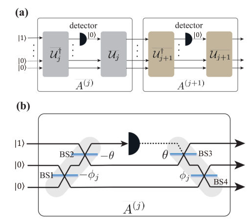
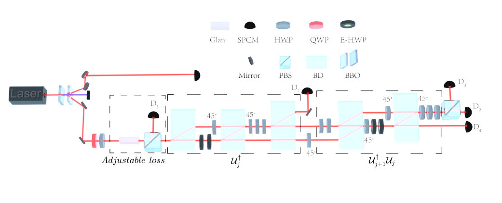
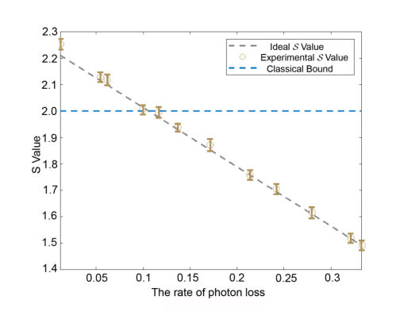
Summary. The paper presents an experimental implementation of a Kochen-Specker contextuality test using sequential measurements in a linear-optical setup. By utilizing 'no-click' detection events, the researchers successfully demonstrated a violation of the KCBS inequality. The setup also functions as a practical tool for verifying the quality of single-photon sources and probing photon-number statistics.
Why it may be interesting. This work is highly relevant to quantum optics and quantum information as it provides a practical method for certifying non-classicality and single-photon statistics using a robust, loss-tolerant sequential measurement protocol.
Main problem. Demonstrating Kochen-Specker quantum contextuality in a linear-optical setup using sequential measurements while ensuring that the same observable is implemented identically across different contexts.
Main result. The authors experimentally demonstrated a clear violation of the KCBS inequality with a value of 2.2363 ± 0.0041 and showed that the setup can serve as a tool for verifying single-photon sources and photon-number statistics.
Method. A sequential measurement scheme is implemented using linear-optical networks and on-off photodetectors, where 'no-click' events are used to preserve the photon for subsequent measurements.
Model / system. A single-photon system distributed among M bosonic modes, implemented via a linear-optical setup using a pulsed Ti:SAG laser, BBO crystals for SPDC, and a hybrid encoding of spatial paths and polarization.
Key observables. The KCBS parameter S, which quantifies the violation of the Kochen-Specker inequality.
Important parameters / regimes. The single-photon population density (rho_11), photon-loss rate (rho_00), and the amplitude of coherent states (alpha).
Assumptions / limitations. The fair-sampling assumption and the trusted-device assumption for the experimental components.
Figures summary. Figure 1 illustrates the experimental setup and the sequential measurement scheme; Figure 2 shows the physical components like beam displacers and wave plates; Figure 3 depicts the dependence of the KCBS quantity on the photon-loss rate.
Paper structure. The paper introduces the problem of contextuality, describes the proposed sequential measurement scheme and mathematical framework, details the experimental implementation and setup, presents the results of the KCBS violation and robustness to loss, and concludes with applications for photon-number verification.
Quantum contextuality provides a fundamental signature of nonclassical behavior that cannot be explained by noncontextual hidden-variable models. We propose and experimentally implement a linear-optical setup for demonstrating Kochen-Specker contextuality via a violation of the KCBS inequality using single photons. Our scheme employs sequential measurements realized with linear-optical networks and on-off photodetectors. The construction ensures that each co-measured observable is implemented by the same physical operation across different contexts. Our experimental results demonstrate a clear violation of the KCBS inequality and robustness against photon loss. Beyond fundamental investigations, the proposed setup provides a practical tool for probing non-classicality and photon-number statistics of quantum states, which in turn enables the verification of single-photon sources.
Authors: Edoardo Zavatti, Gabriele Bellomia, Massimo Capone
Type: theory · Category: strongly correlated electrons · PDF: https://arxiv.org/pdf/2605.18494v1
Analysis basis: full PDF text, analyzed in chunks
Topic relevance: 🔥 entanglement & information structure 4/5 · non-equilibrium dynamics 3/5 · Keldysh / 2PI / non-Gaussian methods 2/5 · correlated / nonlocal dissipation 2/5
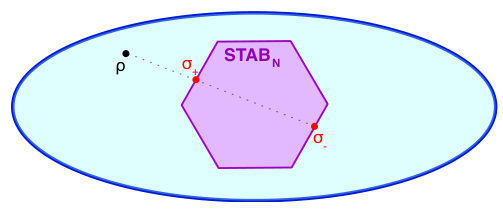
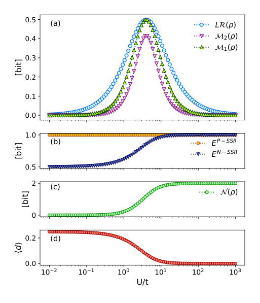
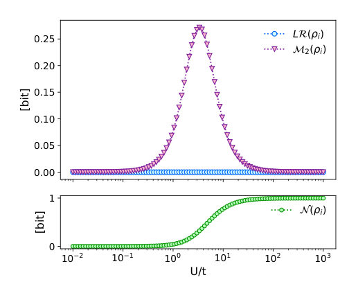
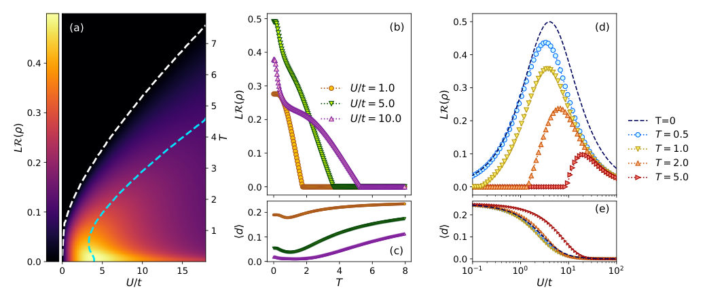
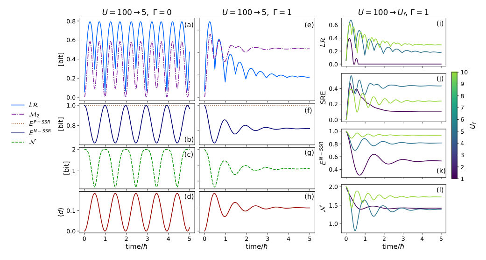
Summary. This paper investigates the 'quantum magic' of the Hubbard dimer, demonstrating that non-stabilizerness is a fundamental resource distinct from entanglement and non-Gaussianity. It shows that this magic peaks during electron localization and can be destroyed by temperature or dephasing. The work also highlights the unreliability of certain entropy-based measures for mixed fermionic states.
Why it may be interesting. It provides a deep look into how quantum complexity resources behave under thermalization and decoherence, which is highly relevant to the study of open quantum systems and many-body dynamics.
Main problem. The study aims to quantify 'quantum magic' (non-stabilizerness) in strongly correlated fermionic systems and determine if it serves as a distinct quantum resource compared to entanglement and non-Gaussianity.
Main result. Non-stabilizerness is identified as a unique resource that peaks during the transition to electron localization and can vanish due to thermal or dynamical processes, providing insights missed by traditional measures.
Method. The authors use exact analytical solutions for the Hubbard dimer to evaluate various complexity metrics, including robustness of magic, stabilizer Renyi entropy, and fermionic non-Gaussianity.
Model / system. The system is the Hubbard dimer, a two-site Hubbard model at half-filling characterized by a hopping amplitude (t) and local Coulomb repulsion (U).
Key observables. Non-stabilizerness (robustness of magic and stabilizer Renyi entropy), fermionic non-Gaussianity, inter-site entanglement under superselection rules, and double occupancy.
Important parameters / regimes. Interaction strength ratio (U/t), temperature (T), and dephasing rate (Gamma) during quantum quenches.
Assumptions / limitations. The study is limited to the two-site Hubbard model, which is a simplified version of more complex many-body systems.
Figures summary. Figure 1 shows a geometric interpretation of the robustness of magic; Figure 2 compares non-stabilizerness, entanglement, and non-Gaussianity; Figure 7 illustrates how magic vanishes in certain density matrix mixtures.
Paper structure. The paper introduces the concept of magic, presents exact solutions for the Hubbard dimer, analyzes zero- and finite-temperature properties, explores non-equilibrium quench dynamics with decoherence, and compares magic to other complexity measures.
We study the non-stabilizerness (quantum magic) content of the Hubbard dimer, an analytically solvable, yet completely non-trivial, model of strongly correlated fermions. We can access zero- and finite-temperature properties as well as the time evolution in a quantum quench protocol. We evaluate local and nonlocal non-stabilizerness using both the robustness of magic and the stabilizer Renyi entropy, demonstrating how the latter often fails in detecting the mixed stabilizer states that are typically found in this kind of systems. Finally, we compare the non-stabilizerness with other genuine resources of quantum-state complexity, i.e., the fermionic non-Gaussianity and the superselected two-site entanglement. Our findings corroborate the notion of non-stabilizerness as a fundamentally different quantum resource, able to give profound insights that are missed by more traditional information-theoretic quantities.
Authors: Selma Memić, Rafael Wagner, Susana F. Huelga, Martin B. Plenio
Type: theory · Category: statistical mechanics · PDF: https://arxiv.org/pdf/2605.18367v1
Analysis basis: full PDF text, analyzed in chunks
Topic relevance: 🔥 quantum measurements 4/5 · non-equilibrium dynamics 3/5 · correlated / nonlocal dissipation 2/5 · methods for driven-dissipative 2/5
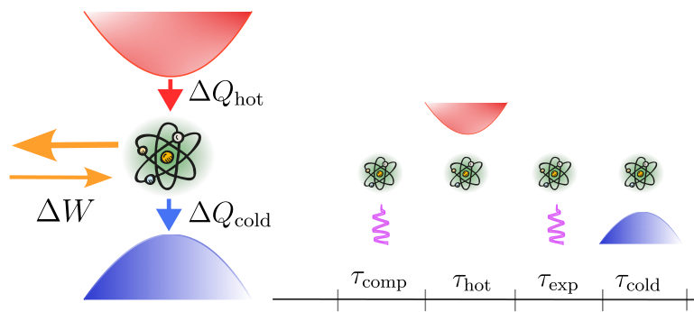
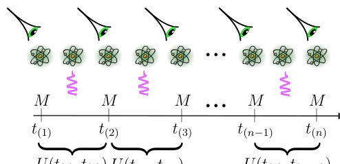
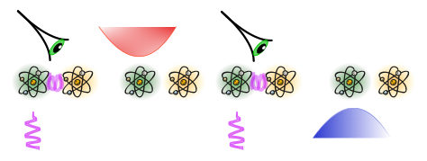
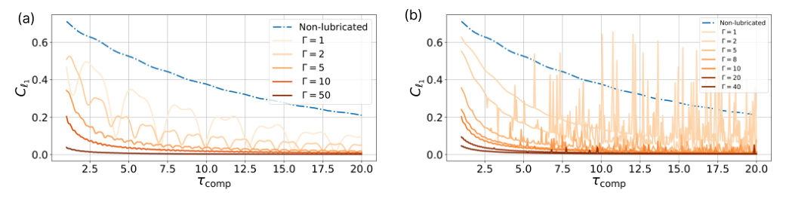
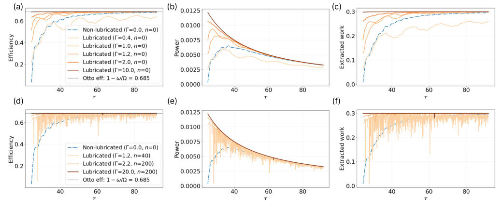
Summary. This paper introduces a new method for 'lubricating' quantum heat engines using Quantum Zeno Dynamics. By coupling the engine to an auxiliary system and monitoring it frequently, the authors show it is possible to suppress quantum friction and achieve high efficiency even during fast, finite-time operations.
Why it may be interesting. It provides a unified framework connecting quantum control (shortcuts to adiabaticity) with quantum thermodynamics and the Zeno effect, offering a new way to suppress dissipation in driven open systems.
Main problem. How to mitigate 'quantum friction' (non-adiabatic transitions and coherences) in finite-time quantum heat engines to maintain high efficiency and power.
Main result. The authors propose a 'Zeno-assisted' lubrication protocol using strong coupling and frequent monitoring to implement a shortcut to adiabaticity, effectively recovering Otto efficiency at finite driving speeds.
Method. The study uses Quantum Zeno Dynamics (QZD) and the framework of adiabatic transporters to derive an effective Hamiltonian in the strong-coupling and frequent-monitoring limits.
Model / system. A tripartite quantum Otto engine consisting of a single-qubit working medium coupled to two thermal baths and an auxiliary 'lubricant' qubit system.
Key observables. Work extraction, efficiency, power, entropy production, and heat exchange.
Important parameters / regimes. Cycle duration (tau), coupling strength (Gamma), energy gaps (omega, Omega), and temperature (Th, Tc).
Assumptions / limitations. Markovian Lindblad dynamics for thermalization, the strong-coupling limit (Gamma to infinity), and the Zeno limit (frequent monitoring).
Figures summary. Figure 14 illustrates the competition between the strong-coupling regime and the Zeno limit, showing how monitoring in the computational basis can suppress the lubrication effect.
Paper structure. The paper introduces the problem of quantum friction, describes the Zeno-assisted protocol, compares it to dephasing-assisted methods, analyzes thermodynamic costs, and provides mathematical proofs in the appendices.
Finite-time quantum heat engines (QHEs) typically extract less work than their quasistatic counterparts because fast driving generates coherences and non-adiabatic transitions during the work strokes, a phenomenon commonly referred to as quantum friction. Quantum lubrication denotes a broad class of strategies that use auxiliary systems or controls to mitigate this loss. In this work, we introduce a lubrication protocol based on the quantum Zeno dynamics (QZD). By coupling the working medium to an auxiliary lubricant system and frequently monitoring the lubricant, we confine the joint evolution to a Zeno subspace and obtain an effective shortcut to adiabaticity during the work strokes of a QHE running an Otto cycle. In the ideal Zeno limit, the protocol reproduces the transitionless dynamics required to preserve populations in the instantaneous energy basis and recover the Otto efficiency at finite stroke duration. We also analyze several implementation-dependent thermodynamic costs, including switching, driving, monitoring, and imperfect thermalization, in order to assess how these costs constrain the practical gains in efficiency and power. Our results identify QZD as a conceptually distinct route to quantum lubrication and highlight quantum heat engines as a useful setting in which to study the interplay between strong coupling, measurement, and quantum thermodynamic control.
Authors: Gabriel Voith, Alexander A. Milner, Valery Milner
Type: experiment · Category: quantum gases · PDF: https://arxiv.org/pdf/2605.17835v1
Analysis basis: full PDF text, analyzed in chunks
Topic relevance: 🔥 non-equilibrium dynamics 4/5 · interference shaping light 2/5 · quantum measurements 2/5 · quantum optics experiment 2/5
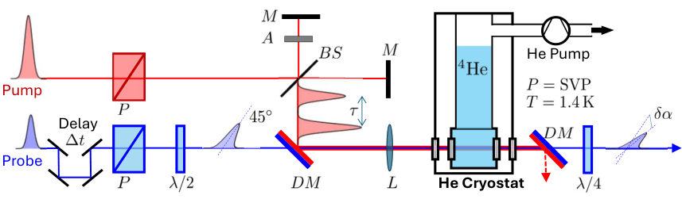
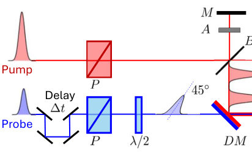
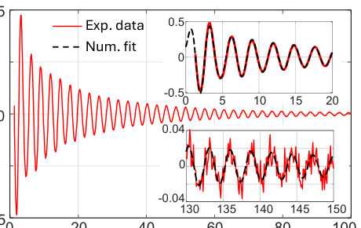
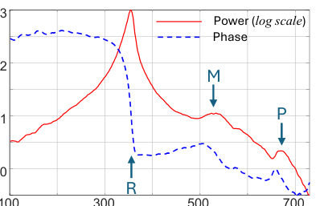
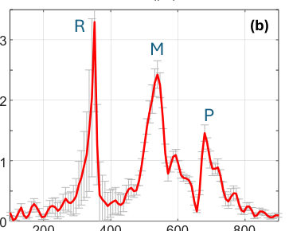
Summary. This paper uses ultrafast laser pulses to perform spectroscopy on collective excitations in superfluid helium far from equilibrium. By using a 'double-kick' method to suppress the dominant roton signal, the authors successfully identified and characterized previously inaccessible maxon and Pitaevskii plateau excitations. The study reveals new insights into the binding energy, lifetime, and phase dynamics of these quasiparticles.
Why it may be interesting. This work demonstrates advanced coherent control techniques to isolate weak many-body excitations from a dominant background, which is highly relevant for studying non-equilibrium dynamics and quasiparticle interactions in any strongly interacting quantum system.
Main problem. Exploring the ultrafast, non-equilibrium dynamics of collective excitations in superfluid helium beyond the well-studied roton regime, specifically identifying maxon and Pitaevskii plateau excitations which are obscured by the dominant roton response.
Main result. The researchers successfully isolated maxon pairs and Pitaevskii plateau excitations using coherent control, revealing that maxon pairs have a surprisingly large binding energy and an extremely short lifetime compared to rotons.
Method. Ultrafast coherent control using sequences of femtosecond infrared pump pulses and a frequency-doubled probe pulse to measure time-resolved optical birefringence via a Michelson interferometer.
Model / system. Superfluid Helium-4 at 1.4 K and saturated vapor pressure, studied in a far-from-equilibrium regime using an optical cryostat.
Key observables. Time-dependent optical birefringence, power spectrum of the signal, and the spectral phase of the excitations.
Important parameters / regimes. Pulse duration of ~70-100 fs, dynamics on picosecond timescales, frequencies in the GHz range (~350-680 GHz), and maxon decay constant of ~3 ps.
Assumptions / limitations. The birefringence signal can be modeled as a superposition of decaying sinusoidal components representing different quasiparticle branches.
Figures summary. Fig 1 shows the experimental setup; Fig 2 displays time-dependent birefringence and its numerical fit; Fig 3 presents the power spectrum and spectral phase identifying R, M, and P peaks; Fig 4 shows the suppression of rotons via a 'double kick' and the resulting residual spectrum; Fig 5 shows the isolated maxon signal contribution.
Paper structure. The paper introduces the problem of studying non-equilibrium excitations, describes the experimental setup and coherent control method, presents the identification of maxon and plateau features through signal suppression, analyzes the energy and phase properties of these excitations, and concludes with the implications for studying strongly interacting quantum fluids.
Ultrafast dynamics of collective excitations in superfluids remains largely unexplored beyond the roton regime, despite its importance for understanding nonequilibrium processes in these systems. Here, we employ ultrafast coherent control with sequences of femtosecond pulses to perform spectroscopy of multiple branches of the Landau excitation spectrum in superfluid helium far from equilibrium. By measuring the time-resolved optical birefringence, we track the nonequilibrium dynamics of maxon pairs and Pitaevskii plateau excitations alongside the previously studied roton pairs, revealing surprisingly strong binding energy of maxon pairs, their extremely short lifetime, and the influence of the quasiparticle effective mass on the phase of the coherent response. These results demonstrate the ability to extract previously inaccessible information about collective excitations in a strongly interacting quantum fluid by probing its nonequilibrium dynamics on femtosecond and picosecond timescales.
Authors: Hong Zeng, Bing-Cheng Yang, Yun-Ru Fan, Li-Ping Zhou, Cheng-Li Wang, Bo-Wen Chen, Ai-Lun Yi, Yong Geng, Guang-Wei Deng, You Wang, Hai-Zhi Song, Jun-Tao Zhang, Hao Li, Li-Xing You, Zi-Hao Zhan, Kai Guo, Xin Ou, Guang-Can Guo, Qiang Zhou
Type: experiment · Category: quantum information and computing · PDF: https://arxiv.org/pdf/2605.18124v1
Analysis basis: full PDF text, analyzed in chunks
Topic relevance: 🔥 QC/QI experiment 4/5 · 🔥 quantum optics experiment 4/5 · interference shaping light 2/5
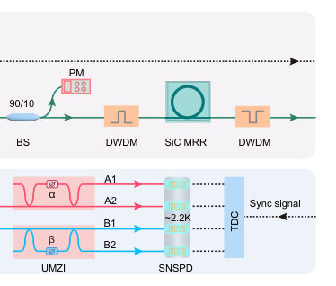
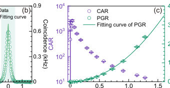
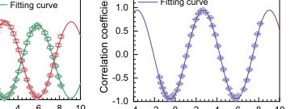
Summary. This paper demonstrates an integrated 4H-SiC microring resonator that overcomes the traditional trade-off between photon generation efficiency and spectral bandwidth. By optimizing the material's nonlinearity and the resonator's geometry, the authors achieved high-fidelity time-bin entanglement suitable for high-speed quantum networks. This provides a scalable pathway for developing efficient, broadband quantum light sources on a chip.
Why it may be interesting. This work is highly relevant to quantum optics and quantum information because it presents a scalable, integrated hardware solution for generating high-rate, broadband entangled photons, which is a critical component for high-speed quantum communication and networking.
Main problem. The efficiency-bandwidth trade-off in cavity-enhanced quantum light sources, where high quality factors increase generation efficiency but narrow the spectral bandwidth, limiting high-speed quantum communication.
Main result. The researchers developed an integrated 4H-SiC microring resonator that achieves high photon-pair generation rates and a 1.0 GHz bandwidth, demonstrating time-bin entanglement with 94.37% fidelity and a Bell inequality violation of over 138 standard deviations.
Method. The study uses spontaneous four-wave mixing (SFWM) in a 4H-SiC microring resonator, optimizing material nonlinearity and device geometry to decouple efficiency from bandwidth, and characterizes entanglement via quantum state tomography and unbalanced Mach-Zehnder interferometry.
Model / system. An integrated 4H-silicon carbide (4H-SiC) microring resonator (MRR) on a photonic integrated circuit, utilizing a 1555.75 nm pulsed pump to generate time-bin entangled photon pairs via third-order nonlinearity.
Key observables. Photon-pair generation rate (PGR), coincidence-to-accidental ratio (CAR), interference visibility, Bell inequality violation (CHSH), and quantum state tomography fidelity.
Important parameters / regimes. Loaded Q-factors of 1.1-1.9 x 10^5, spectral bandwidth of 1.0-1.7 GHz, photon-pair generation rate of 1.35 x 10^7 s^-1 mW^-2, and a 160 MHz repetition rate.
Figures summary. The figures likely illustrate the device geometry, the experimental setup for photon generation and detection, the scaling of photon-pair generation with pump power, and the reconstruction of the density matrix and interference fringes.
Paper structure. The paper introduces the efficiency-bandwidth trade-off, describes the 4H-SiC microring resonator platform and optimization strategy, details the experimental setup and photon generation process, presents the characterization of entanglement and generation rates, and concludes with the implications for scalable quantum networks.
Integrated time-bin-entangled photon-pair source with cavity-enhanced nonlinear optical processes is essential for quantum information technologies. However, microcavities with a high quality factor inherently introduce a trade-off between generation efficiency and photon bandwidth, which hinders the development of high-speed quantum networks with an integrated source. Here, we address this challenge by optimizing the nonlinearity property of the material and the geometry of the integrated microring resonator with a 4H-silicon carbide platform. Operating at a loaded quality factor of 1.9 $\times$ 10^5 - spectral bandwidth of 1.0 GHz and pumped with 300-ps double pulses separated by 1.25 ns at a repetition rate of 160 MHz, the device achieves a time-bin-entangled photon-pair generation rate of 1.35 $\times$ 10^7 s^-1 mW^-2. A raw visibility of 95.55 $\pm$ 0.18% is measured, showing a violation of Bell's inequality by more than 138 standard deviations, and a fidelity of 94.37 $\pm$ 0.22% is obtained by quantum state tomography. These results provide a scalable pathway to an efficient and broadband time-bin entangled quantum light source, overcoming intrinsic limitations of cavity-based designs and advancing integrated platforms for future quantum communication networks.
Authors: James Tian
Type: theory · Category: quantum information and computing · PDF: https://arxiv.org/pdf/2605.17592v1
Analysis basis: full PDF text, analyzed in chunks
Topic relevance: 🔥 quantum measurements 4/5 · entanglement & information structure 2/5 · measurement-induced transitions 2/5 · methods for driven-dissipative 2/5
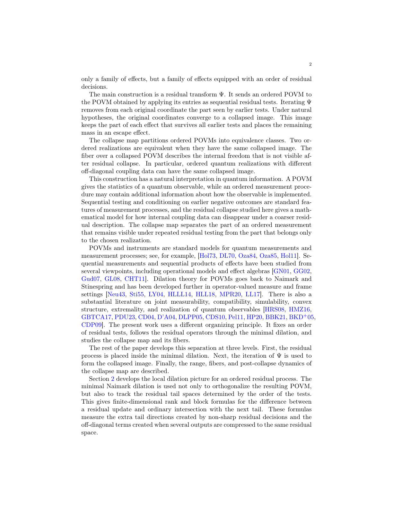
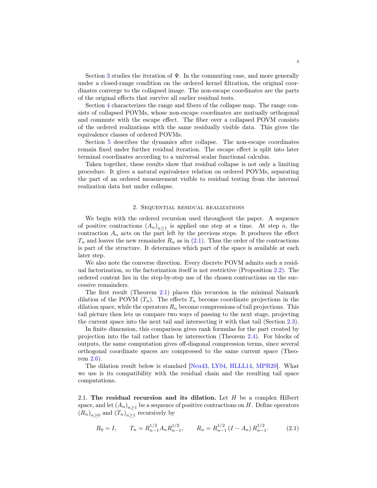
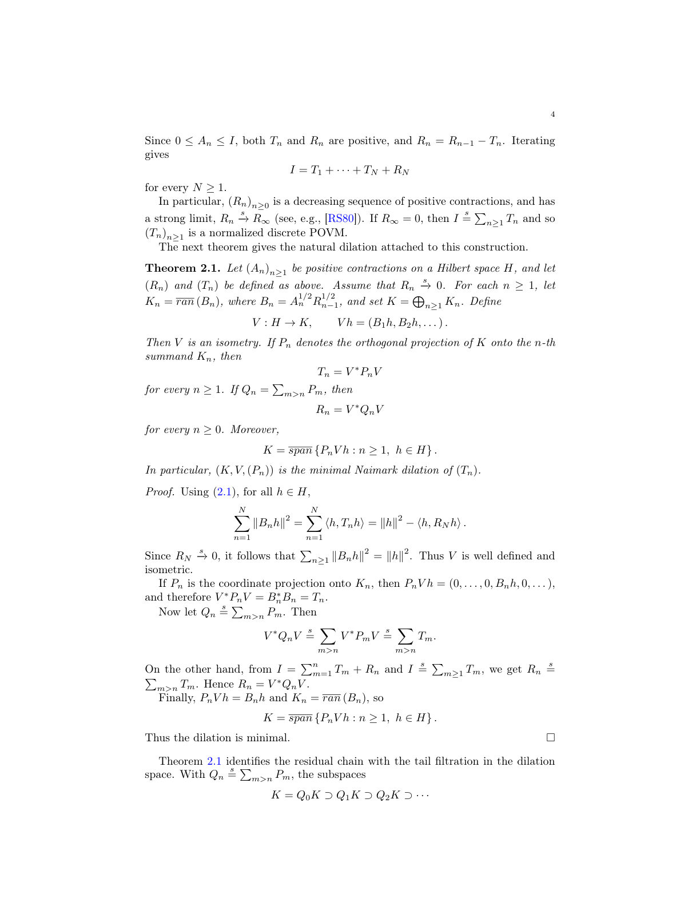
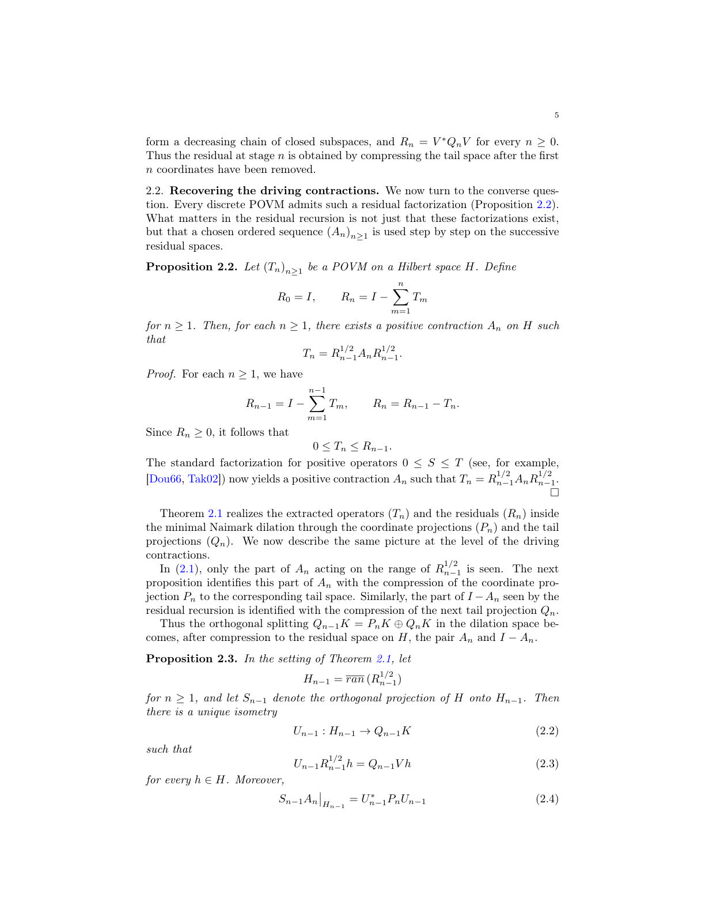
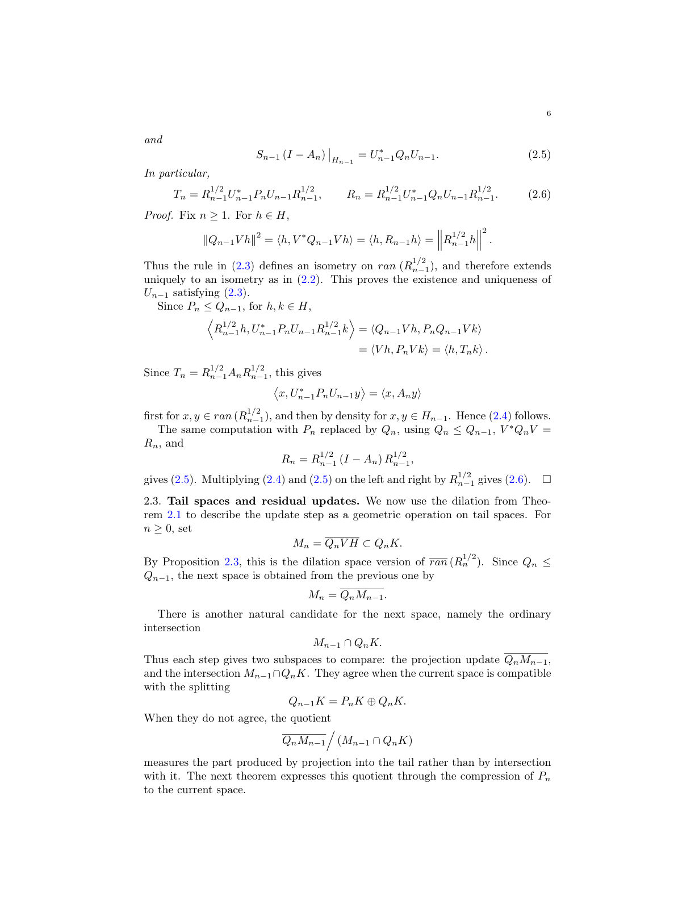
Summary. This paper introduces a mathematical framework to study the 'collapse' of sequential quantum measurements into simpler, commutative forms. It characterizes the information lost (such as off-diagonal coherence) when a sequence of measurements is reduced to its essential surviving components. The work provides a rigorous classification of measurement sequences that are equivalent under this residual transformation.
Why it may be interesting. This is highly relevant for researchers in quantum measurement and open quantum systems, as it provides a rigorous framework for understanding how information is lost or preserved in sequential, non-commuting measurement protocols and how complex measurement sequences can be reduced to simpler, classical-like structures.
Main problem. The paper investigates the residual structure of ordered Positive Operator-Valued Measures (POVMs) and characterizes how sequential measurement processes can be simplified via a 'residual collapse' map.
Main result. The author establishes an equivalence relation on ordered POVM realizations, showing that a collapse map can reduce complex sequential measurements to a commutative, orthogonal set of effects plus a terminal 'escape' effect, while identifying the specific off-diagonal coupling data that is lost during this process.
Method. The study uses operator-theoretic methods, including Naimark dilation, residual recursion, and fixed-point analysis of a residual transform, to track the evolution of measurement effects through sequential testing.
Model / system. The mathematical model consists of discrete POVMs acting on a Hilbert space, representing a sequence of quantum measurements where each subsequent test is applied to the residual state left after previous tests have failed.
Key observables. The effects (outcomes) of the POVM, the residual operators (remaining state mass), and the escape effect (accumulated terminal mass).
Important parameters / regimes. The driving positive contractions (A_n) that determine measurement steps, and the spectral gap condition required for norm convergence.
Assumptions / limitations. The sequence of contractions must satisfy R_n -> 0 for normalization; norm convergence in infinite dimensions requires a spectral gap condition; and the escape effect must have no spectral mass at 1 for certain iterative limits.
Paper structure. The paper begins by defining the residual recursion and transform, moves to analyzing the Naimark dilation and dimension discrepancies in the residual chain, investigates the iterative convergence of the transform to a collapsed POVM, and concludes by characterizing the range and fiber of the collapse map.
Ordered realizations of discrete POVMs are studied through a residual transform generated by sequential tests. One application of the transform replaces each coordinate by the effect obtained after all earlier tests have failed, and appends the remaining mass as a terminal outcome. Under natural hypotheses, iterating the transform produces a collapsed POVM whose non-escape coordinates are the parts of the original effects that survive all earlier tests. The resulting collapse map gives an equivalence relation on ordered POVM realizations. Its range and fibers are characterized. The range consists of collapsed POVMs, whose non-escape coordinates are mutually orthogonal and whose support projections strongly sum to the identity. The fiber over a collapsed POVM consists of all ordered realizations with the same residually visible compressions. In particular, different ordered realizations, including ones with different off-diagonal coupling data, can have the same collapsed image. After collapse, the non-escape coordinates are fixed under further residual iteration. The remaining dynamics takes place in the escape effect, which is fragmented by a universal scalar functional calculus.
Authors: Chris Gustin, Ryotatsu Yangimoto, Edwin Ng, Hideo Mabuchi
Type: theory · Category: other · PDF: https://arxiv.org/pdf/2605.17025v1
Analysis basis: full PDF text, analyzed in chunks
Topic relevance: 🔥 Keldysh / 2PI / non-Gaussian methods 4/5 · 🔥 methods for driven-dissipative 4/5 · non-equilibrium dynamics 2/5
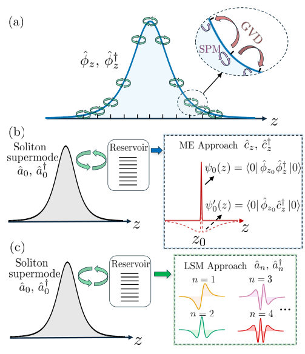
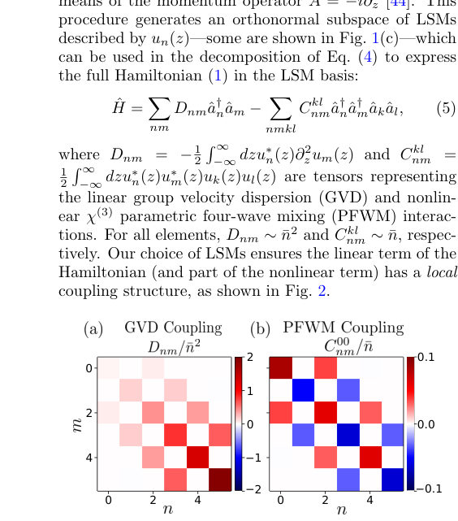
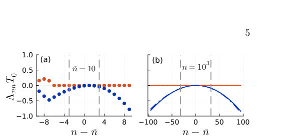
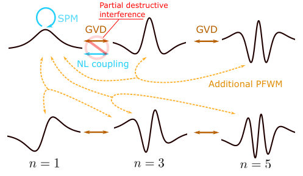
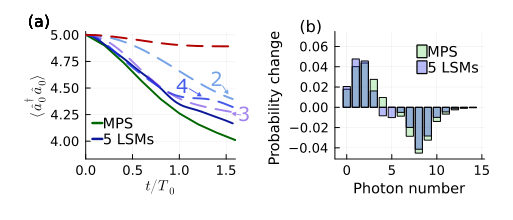
Summary. This paper introduces new theoretical methods to model the quantum evolution of optical solitons beyond the standard linearized regime. By treating the soliton as an open system, the authors successfully capture complex non-Gaussian dynamics and explain why traditional theories underestimate photon loss in the presence of high-order dispersion.
Why it may be interesting. It provides powerful computational tools for analyzing non-Gaussian, non-perturbative dynamics in open quantum systems, specifically addressing the breakdown of linearization in mesoscopic bosonic systems.
Main problem. Modeling the quantum dynamics of optical chi(3) solitons in non-perturbative, non-Gaussian regimes where traditional linearization-based methods fail.
Main result. The authors develop two effective approaches (LSM and ME) that capture quantum-induced phase shifts and photon loss, and identify that dispersive-coupling-induced soliton broadening causes significant underestimation of dissipation in standard theories.
Method. Two approaches: a discrete Lanczos Supermode (LSM) expansion and a continuous Markovian Master Equation (ME) derived via a Born-Markov approximation.
Model / system. A quantum chi(3) nonlinear waveguide system described by a field Hamiltonian containing quadratic dispersion and Kerr nonlinearity, treated as an open system where the field is partitioned into a soliton component and a residual reservoir.
Key observables. Soliton phase shifts, photon loss (dissipation/evaporation), soliton stability, and quantum-induced soliton diffusion.
Important parameters / regimes. Photon number (mesoscopic regime), nonlinearity strength, group velocity dispersion (GVD), and third-order dispersion (TOD).
Assumptions / limitations. The ME approach assumes a Markovian reservoir, while the LSM approach assumes dynamics can be localized to a few-supermode basis.
Figures summary. Schematic of field partitioning; plots of ME dissipator matrix elements; Wigner function showing non-classical negativity; and comparisons of photon loss rates across LSM, ME, and GSSF models.
Paper structure. The paper introduces the open-system framework, details the LSM and ME formalisms, validates them against MPS benchmarks, analyzes stability and phase shifts, and investigates higher-order dispersion effects.
We introduce two approaches to modeling the quantum dynamics of optical $χ^{(3)}$ solitons. Taking an open-system viewpoint, we project the underlying quantum field into system (soliton) and residual reservoir components. The reservoir is treated as either (i) a discrete ``Lanczos supermode'' (LSM) expansion which localizes dynamics to a few-supermode basis, or (ii) a non-local environment which can be traced out by deriving a Markovian master equation (ME). Using these methods, we analyze and identify the quantum structure of both the soliton's stability and its hierarchy of perturbations. Through numerical simulations, we confirm both methods effectively capture quantum-induced soliton phase shifts in a concise few-mode (single-mode for ME) basis, and the LSM approach also captures photon loss which arises from non-Markovian dispersive couplings. As neither method is limited to the linearized regime, our approaches provide powerful computational tools to analyze complex non-Gaussian quantum dynamics of solitons where other commonly-used methods fail, providing insight into such non-perturbative regimes. We also investigate radiation that occurs in the presence of higher-order dispersion with ultrashort pulses, deriving a ME that predicts photon loss consistent with classical theory, but find that both classical and ME theory dramatically underestimate the actual amount of dissipation, which we explain in terms of dispersive coupling-induced soliton broadening.
Authors: Julián Ferreiro-Vélez, Pablo García-Azorín, F. A. Cárdenas-López, Xi Chen
Type: theory · Category: other · PDF: https://arxiv.org/pdf/2605.18237v1
Analysis basis: full PDF text, analyzed in chunks
Topic relevance: 🔥 non-equilibrium dynamics 4/5 · Keldysh / 2PI / non-Gaussian methods 2/5 · correlated cavity matter 2/5 · methods for driven-dissipative 2/5
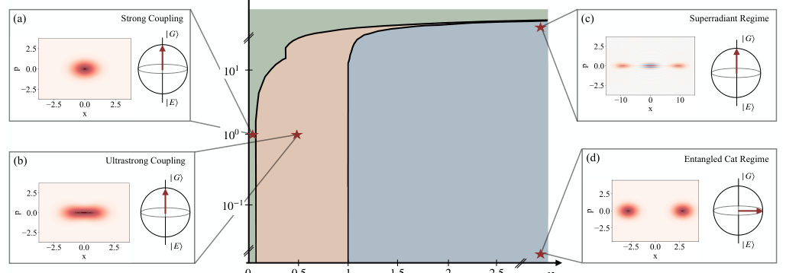
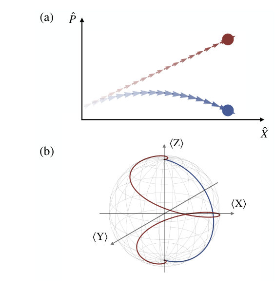
Summary. This paper introduces a new regularized variational method for Counterdiabatic driving that prevents mathematical divergences in systems with unbounded bosonic modes. By applying this to the Quantum Rabi Model, the authors demonstrate robust, high-fidelity state preparation across strong and deep-strong coupling regimes. The proposed control terms are shown to be implementable using Floquet engineering.
Why it may be interesting. It provides a scalable solution for quantum control in continuous-variable systems and offers a way to achieve high-fidelity state preparation in strongly interacting light-matter platforms like superconducting circuits and NV centers.
Main problem. Standard variational approaches for Counterdiabatic (CD) driving fail in the Quantum Rabi Model because the unbounded bosonic Hilbert space causes trace-based cost functions to diverge or become unphysical.
Main result. The authors develop a regularized variational framework using physically motivated renormalization schemes that successfully extends CD driving across the entire Rabi parameter landscape, including the deep-strong coupling regime.
Method. The method introduces a regularized action functional using weighted traces (coherent states, superradiant states, or filtered traces) and demonstrates implementation via Floquet engineering through parametric modulation.
Model / system. The Quantum Rabi Model (QRM), which describes the interaction between a two-level system (qubit) and a single bosonic mode (cavity) across strong, ultrastrong, and deep-strong coupling regimes.
Key observables. Final ground-state fidelity, infidelity, cavity occupation, atomic polarization, and Spearman's rank correlation coefficient between action and fidelity.
Important parameters / regimes. Normalized coupling (eta), frequency ratio (Gamma), and the driving frequency for Floquet engineering.
Assumptions / limitations. The study focuses on coherent unitary dynamics, neglecting dissipative effects and assuming a zero-temperature limit for the bosonic reference state.
Figures summary. Figure 1 shows the QRM regime map; Figure 4 compares fidelity across different regularization schemes; Figure 5 illustrates the fidelity landscape; Figure 6 compares analytical vs. optimized CD protocols; Figure 7 shows time evolution of cavity and atomic observables under Floquet engineering; Figures 8 and 9 analyze the optimization landscape and the predictive power of the regularized action.
Paper structure. The paper identifies the failure of standard trace-based CD methods in unbounded spaces, introduces a regularized variational framework with multiple renormalization schemes, applies this to the QRM to identify new CD terms, proposes a fidelity-based alternative, and demonstrates experimental implementability via Floquet engineering.
Counter-diabatic (CD) driving provides a powerful route to fast and robust state preparation by suppressing diabatic excitations during finite-time evolution. Yet, deriving analytical CD protocols for complex systems remains challenging, motivating the development of variational approaches. These methods typically rely on minimizing trace-based functionals to construct approximate control Hamiltonians. However, in unbounded systems, such functionals can become ill-defined because of the unbounded bosonic Hilbert space, leading to divergent cost functions and unphysical variational coefficients. Here, we introduce a variational optimization framework equipped with physically motivated renormalization schemes that regularize the trace-based metric by restricting it to relevant displaced and low-energy subspaces. As a paradigmatic example, we apply our method to the quantum Rabi model beyond the dispersive approximation and identify two distinct CD contributions that couple the atomic degree of freedom to the position and momentum quadratures of the field. These terms suppress diabatic excitations across coupling regimes ranging from strong to deep-strong light--matter interaction. We further formulate a fidelity-based quantum optimal-control strategy that bypasses the limitations of trace-based variational methods. Finally, we show that the resulting CD terms can be implemented via Floquet engineering through parametric modulation of the native Hamiltonian. Our results demonstrate that CD driving can be consistently extended to continuous-variable systems with unbounded Hilbert spaces, providing a controlled and scalable framework for quantum control in strongly interacting light-matter platforms.
Authors: Soumyojyoti Dutta, Tushar
Type: both · Category: quantum information and computing · PDF: https://arxiv.org/pdf/2605.16614v1
Analysis basis: full PDF text, analyzed in chunks
Topic relevance: 🔥 QC/QI experiment 4/5 · entanglement & information structure 3/5 · quantum measurements 2/5
Summary. This paper presents 'Magic Secret Sharing,' a method to distribute the non-Clifford resources required for universal quantum computing such that only a specific coalition can access them. By using GHZ states and phase gates, the authors show that computational power can be shared with a threshold structure, even providing a device-independent way to certify the delivery of magic. The protocol was successfully demonstrated on a large-scale IBM quantum processor.
Why it may be interesting. not directly relevant
Main problem. The paper introduces a new quantum cryptographic primitive, Magic Secret Sharing (MSS), which aims to distribute the computational capability (non-Cliffordness) of a quantum state using a threshold structure.
Main result. The authors demonstrate a (n-1, n) threshold protocol where an authorized coalition can reconstruct magic content, while unauthorized parties hold stabilizer states. This was experimentally validated on the 156-qubit IBM Heron processor with high fidelity and near-exact magic recovery.
Method. The protocol uses GHZ states and local phase gates, employing the resource theory of magic (Wigner distance) to quantify non-stabilizerness. Certification is achieved via one-sided device-independent (1SDI) steering inequalities.
Model / system. The protocol is implemented on the 'ibm_marrakesh' (156-qubit IBM Heron r2) quantum hardware using a 3-party (2,3) GHZ state configuration.
Key observables. Magic content (Wigner distance C), state fidelity, security metric (C of the unauthorized party), and steering inequality violations.
Important parameters / regimes. The phase parameter phi (controlling magic injection), the (n-1, n) threshold structure, and the 15-to-1 magic state distillation threshold.
Assumptions / limitations. The security relies on the invariance of the maximally mixed state under local unitaries; the 1SDI setting assumes the recipient does not need to trust the coalition's devices.
Figures summary. Figure 2(a) is mentioned in the notes, and Table 1 summarizes experimental results including theoretical vs. measured magic content, error bars, and security metrics.
Paper structure. The paper introduces the MSS primitive, defines the resource theory framework, provides mathematical proofs for the threshold structure and gate uniqueness, presents the 1SDI certification method, and concludes with experimental validation on IBM hardware.
We introduce Magic Secret Sharing (MSS), a quantum cryptographic primitive in which the secret is the computational capability of a quantum state rather than its classical description. In the resource theory of magic, non-stabilizer states fuel universal quantum computation via non-Clifford gates; MSS distributes this resource with an (n-1,n) threshold structure using a pre-shared GHZ state and a single local phase gate P(phi) = diag(1, exp(i*phi)). Any individual party holds the maximally mixed state I/2, with Wigner distance C(I/2) = 0, so no local operation can yield non-Clifford computational advantage regardless of what operations are applied or what noise acts on the device. The authorised coalition reconstructs magic content C(phi) = (|sin(phi)| + |cos(phi)| - 1)/2 exactly, enabling a logical T gate via gate teleportation in multi-server blind quantum computation (BQC). Among diagonal parametric gates, phase gates are the unique class satisfying the security condition, characterised via an exact column-sum condition. The protocol is elevated to a one-sided device-independent (1SDI) setting via a steering inequality: the assemblage produced on the recipient's side certifies magic delivery without trusting the coalition's devices. We demonstrate the (2,3) instance on ibm_marrakesh (156-qubit IBM Heron): security (C(rho_Bob) = 0.000, below LP reconstruction tolerance) holds in all runs, and state fidelity reaches 0.959-0.986 for the authorised party, with faithfulness confirmed for all four test values of phi including near-exact recovery (C = 0.154 vs theory 0.153) for phi = pi/8.
Authors: R. E. Kastner
Type: theory · Category: statistical mechanics · PDF: https://arxiv.org/pdf/2605.17196v1
Analysis basis: full PDF text, analyzed in chunks
Topic relevance: 🔥 quantum measurements 4/5 · entanglement & information structure 3/5 · non-equilibrium dynamics 2/5
Summary. This paper re-evaluates the Maxwell's Demon paradox by arguing that the Second Law of Thermodynamics is preserved by the physical consequences of quantum measurement. It shifts the focus from the entropy cost of memory erasure to the unavoidable entropy increase caused by the Heisenberg Uncertainty Principle during the measurement process.
Why it may be interesting. It provides a fundamental link between quantum measurement theory, information theory, and thermodynamics, specifically addressing how the uncertainty principle enforces the Second Law in open quantum systems.
Main problem. The challenge posed by Maxwell's Demon to the Second Law of Thermodynamics and whether the demon can violate entropy increase through microscopic manipulation.
Main result. The Second Law is upheld by quantum mechanics because the Heisenberg Uncertainty Principle ensures that the physical act of measurement or localization incurs an unavoidable entropy cost, precluding the demon's success.
Method. A historical and theoretical analysis comparing classical epistemic uncertainty with quantum ontological uncertainty, utilizing the Quantum Information Uncertainty Relation (QIUR) and Shannon entropy.
Model / system. A single-molecule gas system in a one-dimensional box (Szilard Engine) where a partition is used to manipulate or measure the particle's position and momentum.
Key observables. Entropy (S), position uncertainty (delta x), momentum uncertainty (delta p), and transition rates (r_ij).
Important parameters / regimes. The classical limit (high temperature), the regime of low-energy photon measurement, and the variance of the probability distribution.
Assumptions / limitations. The use of Gaussian wavefunctions as an approximation for delocalized particles and the assumption of fundamental (ontological) stochasticity in quantum transitions.
Figures summary. Figure 1 shows a schematic of the Szilard Engine; Figure 2 depicts a localized classical particle; Figure 3 depicts a delocalized quantum molecule.
Paper structure. The paper begins with a historical review of the Demon challenge (Szilard, Brillouin, Bennett), critiques the Bennettian view of information erasure, and concludes by proposing a quantum-mechanical resolution based on the Heisenberg Uncertainty Principle.
This work provides an overview of key historical developments in the formulation of the Second Law of Thermodynamics, focusing on the notorious challenge of ``Maxwell's Demon'', a hypothetical creature who could presumably violate that law. It begins by recalling Maxwell's challenge and discussing the apparent loophole in the Second Law that appears to make such a violation possible. An alternative formulation of the Demon challenge by Szilard is considered, along with his attempted defeat of the Demon through reference to measurement. A similar effort by Brillouin is also analyzed. The proposal of Bennett to defeat the Demon through the requirement of memory erasure is critically discussed. Finally, it is proposed that the Second Law gains a firm foundation through neglected features of quantum theory. In particular, an application of the Heisenberg Uncertainty Principle is shown to decisively defeat the Demon, as well as to serve as justification for Landauer's Principle, albeit in terms distinct from the usual computational formulation.
Authors: Yohsuke T. Fukai, Keiichi Tamai, Tetsuya Hiraiwa
Type: theory · Category: statistical mechanics · PDF: https://arxiv.org/pdf/2605.17781v1
Analysis basis: full PDF text, analyzed in chunks
Topic relevance: 🔥 non-equilibrium universality 4/5 · non-equilibrium dynamics 3/5 · driven-dissipative phase transition 2/5
Summary. This paper demonstrates a universal crossover between two fundamental non-equilibrium universality classes: absorbing-state phase transitions and KPZ growth. It shows that at long time scales, the fluctuations of the active interface in APT models are governed by KPZ physics. This provides a fundamental link between the bulk dynamics of phase transitions and the scale-invariant growth of interfaces.
Why it may be interesting. not directly relevant
Main problem. The paper investigates the relationship between universal fluctuations in absorbing-state phase transitions (APTs) and Kardar-Parisi-Zhang (KPZ) interface growth, specifically seeking to establish how bulk scale invariance relates to interface fluctuations.
Main result. The authors identify a universal crossover where short-time fluctuations governed by APT exponents transition into long-time fluctuations belonging to the KPZ universality class, with height distributions converging to the GOE-TW distribution.
Method. Numerical simulations of (2+1)-dimensional discrete models and Langevin equations, combined with scaling analysis and parameter estimation using the Levenberg-Marquardt and Nelder-Mead algorithms.
Model / system. The study utilizes discrete models such as Bond Percolation (DP class) and the Biased Voter Model (CDP class), alongside continuum stochastic Fisher-Kolmogorov-Petrovsky-Piskunov (sFKPP) Langevin equations.
Key observables. Interface height h(x, t), probability density functions of height, cumulants (mean, variance, skewness, kurt1), spanwise-averaged density, and spatial covariance.
Important parameters / regimes. Distance from criticality (epsilon), APT correlation time (xi_parallel) and length (xi_perp), and the dimensionless parameter D/sigma^2 for CDP models.
Assumptions / limitations. The analysis assumes that height fluctuations follow the Gaussian Orthogonal Ensemble Tracy-Widom (GOE-TW) distribution for KPZ fitting purposes.
Figures summary. Figures include schematics of interface height definitions, snapshots of active sites, plots of mean density and height probability distributions, and scaling collapses of cumulants and spatial covariance.
Paper structure. The paper introduces the problem of APT-KPZ connection, describes the discrete and continuum models used, details the numerical simulation and parameter estimation methods, presents the results of the universal crossover and scaling collapse, and concludes with discussion on parameter universality and potential experimental candidates.
Despite similarities between models exhibiting absorbing phase transitions (APTs) and those showing Kardar-Parisi-Zhang (KPZ) growth, the relationship between these universal fluctuations has remained elusive. We numerically study (1+1)-dimensional interfaces of (2+1)-dimensional models showing APTs of directed percolation (DP) and compact directed percolation (CDP) classes with an active boundary, finding a universal crossover from short-time APT-governed fluctuations to long-time KPZ fluctuations. Upon rescaling time and length by the APT correlation time and length, the cumulants of the interface height distributions collapse onto a single scaling function. The fluctuation properties of the discrete Domany-Kinzel model and the continuum stochastic Fisher-Kolmogorov-Petrovsky-Piskunov (sFKPP) equation coincide, indicating that the KPZ growth parameters are determined solely by fundamental properties of the APT. For the CDP sFKPP equation, a dimensionless parameter tunes both the critical interface distribution and the KPZ parameters, with the interface properties of the biased voter model recovered in a limiting case. These results uncover a universal crossover in which KPZ fluctuations emerge from APT fluctuations at long times, linking paradigmatic universality classes of nonequilibrium scale-invariant phenomena.
Authors: Jordan Huang, Ethan Kasaba, Thomas J. DiNapoli, Tanay Roy, Srivatsan Chakram
Type: both · Category: quantum information and computing · PDF: https://arxiv.org/pdf/2605.18658v1
Analysis basis: full PDF text, analyzed in chunks
Topic relevance: 🔥 QC/QI experiment 4/5 · quantum optics experiment 3/5 · quantum measurements 2/5
Summary. The paper demonstrates a method for universal control of a high-dimensional quantum system encoded in a microwave cavity. By optimizing sequences of Jaynes-Cummines interactions and qubit rotations, the researchers achieved high-fidelity control of qutrits, ququarts, and ququints. This establishes a scalable and efficient framework for implementing bosonic quantum computing.
Why it may be interesting. It provides a practical route to programmable bosonic processors by turning a known physical interaction (JC) into a universal gate set, while demonstrating how dispersive shifts can be leveraged as a computational resource.
Main problem. Achieving universal control of a high-dimensional bosonic oscillator (qudit) using the Jaynes-Cummings interaction, specifically overcoming the challenges of dispersive shifts and circuit depth scaling.
Main result. Demonstrated universal qudit control with a mean post-selected process fidelity of 96% for qutrit gates and successful implementation of ququart and ququint shift gates.
Method. Decomposing arbitrary unitaries into sequences of JC interactions and qubit rotations, using gradient descent optimization for pulse parameters, and utilizing frequency chirping for error mitigation.
Model / system. A superconducting circuit-QED platform consisting of a transmon ancilla qubit coupled to a high-quality factor microwave cavity mode, operating in a weakly dispersive regime.
Key observables. Joint qubit-oscillator Wigner tomography, qudit process tomography, and state fidelity.
Important parameters / regimes. JC interaction rate (g_JC), dispersive shift (chi_f), photon number cutoff (d), and transmon coherence times (T1, T2).
Assumptions / limitations. Assumes a decoherence-free evolution model for some comparisons; neglects higher-order energy shifts and cavity self-Kerr; assumes the ability to stabilize temperature to prevent frequency fluctuations.
Figures summary. Energy level diagrams of the JC interaction; scaling analysis of gate infidelity and circuit depth; demonstration of qutrit/ququart/ququint shift gates via Wigner functions; and process tomography matrices for universal qutrit gates.
Paper structure. Introduction of the JC control problem; description of the circuit-QED platform and Hamiltonian; presentation of the control protocol and optimization methods; experimental demonstration of universal qutrit gates; scaling analysis for higher-dimensional qudits; and error budget/robustness analysis.
The Jaynes-Cummings (JC) interaction-the coherent exchange of excitations between a two-level system and a harmonic oscillator-is one of the fundamental interactions of quantum optics, realized across platforms such as cavity quantum electrodynamics, trapped ions, mechanical resonators, and superconducting circuits. Although JC interactions and qubit rotations form a universal gate set for oscillator control, practical implementations have not been demonstrated. Here we develop and experimentally demonstrate universal JC-based oscillator control by compiling arbitrary unitary gates into sequences of JC interactions and qubit rotations. In our experiment, the oscillator is realized using a mode of a high quality factor microwave cavity and the ancilla qubit using a superconducting transmon circuit, with the JC interaction implemented by a sideband interaction enabled by the Josephson nonlinearity. The native gates are constructed to be closed below a chosen cutoff photon number, encoding a qudit with suppressed leakage errors, while ancilla relaxation errors are detectable. We further find that the dispersive shift serves as a compilation resource that reduces circuit depths. We demonstrate universal qudit control and implement a single-qutrit gate set with a mean post-selected process fidelity of 96%, as well as ququart and ququint shift gates. These results establish Jaynes-Cummings control as a practical route to universal oscillator control, enabling programmable bosonic processors across a variety of quantum platforms.
Authors: Fabio Benatti, Dariusz Chruściński, Saverio Pascazio
Type: theory · Category: quantum information and computing · PDF: https://arxiv.org/pdf/2605.18639v1
Analysis basis: full PDF text, analyzed in chunks
Topic relevance: 🔥 entanglement & information structure 4/5 · methods for driven-dissipative 2/5 · non-equilibrium dynamics 2/5
Summary. The paper investigates whether one can describe open quantum systems using maps that are positive but not completely positive by restricting the allowed initial states. It proves that this 'compatibility' approach fails in high dimensions because the set of allowed entangled states shrinks to zero, suggesting that Complete Positivity is a necessary requirement for consistent high-dimensional dynamics.
Why it may be interesting. This is highly relevant for researchers in open quantum systems and many-body dynamics as it addresses a fundamental consistency condition (CP) and shows that non-CP models may be physically inconsistent with large-scale entanglement.
Main problem. The paper critiques the validity of abandoning the requirement of Complete Positivity (CP) in open quantum dynamics by using a 'compatibility-based' approach that restricts initial states.
Main result. The authors demonstrate that as the system dimension increases, the volume of compatible entangled states vanishes, revealing an intrinsic weakness in non-CP dynamical models.
Method. The authors use spectral analysis of the lifted map and volume calculations of the parameter interval for isotropic states to evaluate the compatibility of non-CP maps.
Model / system. The study focuses on finite d-level quantum systems interacting with an environment, specifically analyzing a family of positive but non-CP maps (Lambda_mu) and isotropic qudit states.
Key observables. The volume of compatible entangled states (V_comp) and the fidelity (F) of isotropic states.
Important parameters / regimes. System dimension (d), map parameter (mu), and state fidelity (F).
Assumptions / limitations. The analysis is primarily focused on finite-dimensional Hilbert spaces and specific families of channels and states.
Paper structure. The paper begins by framing the dilemma of CP vs. non-CP dynamics, evaluates the pros and cons of the CP requirement, analyzes the 'compatibility-based' strategy using isotropic states, and concludes with the scaling of compatible state volumes in high dimensions.
The requirement of complete positivity is very often regarded as a fundamental consistency condition for the description of open quantum dynamics. We critically examine this requirement and discuss both its physical motivations and its limitations. We analyze proposals based on restricting the domain of non-completely positive maps to subsets of compatible initial states. Using isotropic states as a concrete example, we show that such domain restrictions become increasingly severe with growing system dimension, revealing an intrinsic weakness of the compatibility-based approach.
Authors: Hikaru Kuriki, Masaya Kunimi, Tetsuro Nikuni
Type: theory · Category: quantum gases · PDF: https://arxiv.org/pdf/2605.17940v1
Analysis basis: full PDF text, analyzed in chunks
Topic relevance: 🔥 non-equilibrium dynamics 4/5 · analog quantum simulation 2/5 · driven-dissipative phase transition 2/5
Summary. This paper explores how Shapiro steps emerge in a driven superfluid Fermi gas in a ring trap. It demonstrates that these quantized steps are caused by the synchronization of soliton emissions at a moving barrier. The findings provide a microscopic understanding of transport properties across the BCS-BEC crossover.
Why it may be interesting. It provides microscopic insights into phase-locking and nonequilibrium phase dynamics in topological atomtronic systems, bridging the gap between fundamental BCS-BEC crossover physics and driven Josephson junction dynamics.
Main problem. Investigating the nonequilibrium dynamics and transport properties of Shapiro steps in a superfluid Fermi gas within a ring trap across the BCS-BEC crossover.
Main result. The study observes quantized Shapiro-step plateaus in the chemical potential difference, which originate from synchronized phase slips mediated by periodic soliton generation at the barrier.
Method. Numerical simulations using the time-dependent Bogoliable-de Gennes (tdBdG) equations solved via the split-step Fourier method and a modified Broyden's method for self-consistency.
Model / system. A superfluid Fermi gas in a 1D ring geometry containing a moving Gaussian potential barrier that acts as a Josephson junction biased by DC and AC currents.
Key observables. Chemical potential difference (delta-mu), topological winding number, order parameter amplitude and phase, local current density, and particle number density.
Important parameters / regimes. Interaction strength (kF a inverse), DC barrier velocity (v_DC), AC amplitude (x_AC), AC frequency (omega), and the Stewart-McCumber parameter (beta_c).
Assumptions / limitations. The system is treated in an effective 1D geometry at zero temperature, and the midpoint order parameter is assumed to evolve smoothly during time steps.
Figures summary. Schematic of the ring trap setup; dynamics of the order parameter and winding number; relationship between barrier velocity and chemical potential difference showing Shapiro steps; and the evolution of local velocity at the barrier.
Paper structure. The paper introduces the physical setup and problem, details the numerical BdG framework and self-consistent loop, presents results on the superflow-to-voltage transition, analyzes the microscopic soliton-mediated mechanism of Shapiro steps, and discusses the breakdown in the BCS regime.
We investigate the transport properties of a superfluid Fermi gas confined in a ring trap with a moving potential barrier across the Bardeen-Cooper-Schrieffer (BCS) to Bose-Einstein condensate (BEC) crossover. Employing time-dependent Bogoliubov--de Gennes (BdG) equations, we simulate the dynamics of a Josephson junction biased by both DC and AC currents. Over a wide range of interaction strengths, we observe clear low-order Shapiro-step plateaus in the barrier-velocity--chemical-potential-diffenrence, within the phase-coherent regime, where the time-averaged chemical potential difference is quantized in units of $\hbarω/2$. This factor of $1/2$ reflects our convention of defining the chemical potential per single fermion in the BdG framework. Microscopic analysis reveals that these fundamental steps originate from synchronized phase slips mediated by periodic soliton generation at the barrier. Our findings clarify the role of interaction regimes in the nonequilibrium phase dynamics of ring-trapped fermionic superfluids and provide microscopic insights relevant to future studies of atomtronic systems with nontrivial topology.
Authors: Rabbia Tahir, Paweł Wyborski, Artur Tuktamyshev, Stefano Vichi, Richard Nötzel, Battulga Munkhbat, Stefano Sanguinetti
Type: experiment · Category: quantum information and computing · PDF: https://arxiv.org/pdf/2605.17332v1
Analysis basis: full PDF text, analyzed in chunks
Topic relevance: 🔥 QC/QI experiment 4/5 · 🔥 quantum optics experiment 4/5

Summary. The paper demonstrates a method to grow strain-free, symmetric InGaAs quantum dots that emit in the telecommunications C-band. By using local droplet etching on GaAs(111)A substrates, the researchers achieved high-quality single-photon emission with low asymmetry. This is a significant step toward building long-distance quantum communication networks using existing fiber technology.
Why it may be interesting. This work is highly relevant to quantum optics and quantum networks as it provides a scalable material platform for generating high-purity single photons at the telecom C-band, which is essential for integrating quantum nodes into existing fiber-optic infrastructure.
Main problem. The need for high-quality, strain-free single-photon emitters operating in the telecommunication C-band (1550 nm) for low-loss, long-distance quantum communication networks.
Main result. Successful fabrication of strain-free, symmetric InGaAs/InAlAs quantum dots on GaAs(111)A substrates that emit in the 1400-1600 nm range with high single-photon purity (g2(0) = 0.141).
Method. The researchers used Local Droplet Etching (LDE) via Molecular Beam Epitaxy (MBE) to create nanoholes, followed by filling them with InGaAs, and validated the results using 8-band k.p simulations and optical spectroscopy.
Model / system. Strain-free, C3v-symmetric In0.7Ga0.3As/In0.7Al0.3As quantum dots grown on a thin metamorphic buffer layer on vicinal GaAs(111)A substrates.
Key observables. Emission wavelength (1400-1600 nm), exciton lifetimes (1.3-1.9 ns), linewidths (approx. 300 ueV), second-order autocorrelation g2(0), and degree of linear polarization (DOLP).
Important parameters / regimes. Target wavelength of 1550 nm, substrate temperature of 450-500 C, and QD height of approximately 6 nm.
Assumptions / limitations. The use of the envelope function approximation (EFA) within an eight-band k.p framework to model electronic properties.
Figures summary. Figure 1 shows the QD fabrication schematic; Figure 2 displays AFM morphology of nanoholes and simulated emission properties; Figure 3 shows micro-photoluminescence spectra and photon statistics.
Paper structure. The paper introduces the problem of C-band emission, describes the LDE growth process and metamorphic buffer layer, presents morphological characterization via AFM, details the k.p simulations, and concludes with optical characterization of the emitters.
Non-classical photon sources made of semiconductor quantum dots (QDs) emitting in the telecommunication C-band are crucial components for low-loss, long-distance photonic quantum communication networks. Here we designed and fabricated strain--free In$_{0.7}$Ga$_{0.3}$As/In$_{0.7}$Al$_{0.3}$As QDs grown on GaAs(111)A substrates working as single-photon emitters in the 1550 nm window. The QDs were grown via local droplet etching method in a molecular beam epitaxy environment, employing a thin In$_{0.7}$Al$_{0.3}$As metamorphic buffer layer with the same lattice constant of the QD material, thus allowing for a completely strain--free self-assembly of the QDs. The QDs exhibit a C$_{3v}$ symmetry with a ground state emission in the 1400--1600 nm range. The exciton lifetimes of $\approx$ 1.3--1.9 ns and linewidths as low as $\approx$ 300 $μ$eV show the good quality of the fabricated QDs. Second-order autocorrelation measurements under pulsed excitation confirmed the single-photon purity of the emitters, yielding a $g^{(2)}(0)$ value of $0.141 \pm 0.027$
Authors: Thi D. Hoang, Fateme Mahdikhany, Zixuan Wang, Richard Mirin, Kevin Silverman, Poolad Imany, Shuo Sun
Type: experiment · Category: other · PDF: https://arxiv.org/pdf/2605.16694v1
Analysis basis: full PDF text, analyzed in chunks
Topic relevance: 🔥 quantum optics experiment 4/5 · QC/QI experiment 3/5
Summary. The researchers have created a tiny, vibration-resistant mechanical assembly for open microcavities that works reliably in standard cryostats. This platform allows for easy tuning of cavity resonance and has successfully demonstrated strong coupling with quantum dots. It offers a scalable path toward portable quantum light sources and quantum computing components.
Why it may be interesting. This work provides a highly stable and scalable hardware platform for cavity QED, which is essential for implementing spin-photon interfaces and quantum networks in solid-state systems.
Main problem. Operating open microcavities at cryogenic temperatures is challenging due to extreme sensitivity to mechanical vibrations and the need for bulky, custom vibration-mitigation setups.
Main result. The authors developed a compact, robust, and tunable mechanical host for an open microcavity that shows no vibration-induced broadening in a standard cryostat and achieves cooperativity exceeding unity with an InGaAs quantum dot.
Method. The platform uses a piezo-driven assembly to tune cavity resonance in situ and employs cross-polarized transmission spectroscopy and photoluminescence to characterize the emitter-cavity coupling.
Model / system. The system is a plano-concave Fabry-Perot resonator consisting of a GaAs/AlAs DBR bottom mirror and a microscale concave top mirror, coupled to InGaAs quantum dots embedded in a p-i-n junction.
Key observables. Cavity resonance, quantum-dot-induced transmission dips (dipole-induced transparency), cavity finesse, and cooperativity.
Important parameters / regimes. Finesse > 1,000, coupling strength g/2pi = 1.37 GHz, cooperativity C > 1, and a tuning range of 3 nm.
Assumptions / limitations. The theoretical model for fitting spectra omits inhomogeneous spectral diffusion, and the model assumes the weak excitation limit.
Figures summary. Figure 1 shows the microcavity schematic and electric field profile; Figure 2 shows PL spectra and cavity modes; Figure 3 displays transmission spectra showing QD-induced dips, saturation, and Fano-like features; Supplemental figures show device yield and Stark tuning.
Paper structure. The paper introduces the vibration-mitigation challenge, describes the fabrication and architecture of the microcavity and mechanical host, presents characterization of cavity stability and tuning, demonstrates quantum dot coupling and nonlinear response, and concludes with scalability and device yield analysis.
Open microcavities provide a powerful platform for studying cavity quantum electrodynamics in solid-state systems. However, operating open microcavities at cryogenic temperatures, as required for many solid-state quantum emitters, typically demands bulky and cryostat-specific vibration-mitigation setups. Here we report a compact, robust, and tunable mechanical host for an open microcavity. The complete mechanical assembly fits within a footprint of $1'' \times 1'' \times 0.5''$. Using this mechanical host, we observe no vibration-induced cavity broadening for an open microcavity with finesse exceeding 1,000 without cryostat customization or active locking. The assembly also enables in situ tuning of the cavity resonance over 3 nm, and the resonance of the same cavity remains within this range across multiple cooldowns. To further showcase the capability of this assembly, we demonstrate coupling between an InGaAs quantum dot and an open microcavity with a cooperativity exceeding unity. This platform provides a versatile testbed for fundamental cavity quantum electrodynamics and a scalable route to portable quantum light sources and spin-photon interfaces for quantum repeaters, quantum networks, and photonic quantum computing.
← Index · ← Previous · Next →